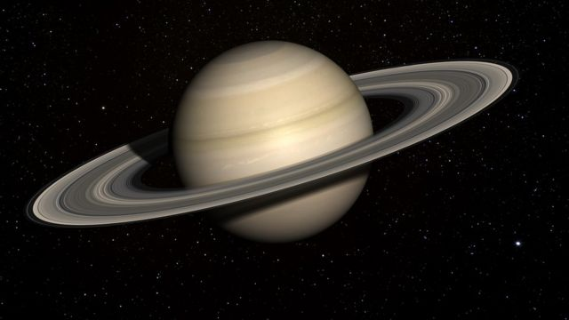

Uno de los planetas más distintivos del Sistema Solar. Es una gran bola de gas con una masa casi 95.1 veces la de la Tierra y un volumen 755 veces mayor, famosa por sus numerosos anillos. Pertenece al grupo de los planetas gaseosos. Es el sexto planeta más alejado del Sol (a unos 1,400 millones de kilómetros) y el segundo planeta situado después del cinturón de asteroides. Al igual que Júpiter, bajo el telescopio se ve caracterizado por franjas oscuras paralelas sobre un fondo amarillo que puede parecer verde cerca de los polos. › Es el sexto planeta más alejado del Sol y cuenta con 53 satélites confirmados. Tiene 53 satélites y otros 9 están por confirmarse. El más grande de estos satélites es Titán, que es el segundo más grande del Sistema Solar. Otros satélites son Jano, Atlas, Epimeteo, Prometeo, Pandora, Calipso, Dione, Helena y Febe. Tiene un período de rotación sideral de 10.656 horas (10.7) o 0.444 días, por lo que un día en Saturno es más corto que un día terrestre. Por otro lado, el planeta completa una órbita alrededor del Sol en 29 años terrestres.
En 1610, el astrónomo Galileo Galilei observaba a Saturno con un sencillo telescopio cuando de pronto advirtió unos objetos en cada uno de sus lados. Plasmó entonces un dibujo del planeta como un gran astro central con astros menores a los lados, es decir, como un planeta de tres cuerpos. Después lo imaginó como un planeta con una especie de asas a los lados. Hasta 1769 el científico Christiaan C. Huygens utilizó un telescopio más potente y afirmó que Saturno estaba rodeado por un anillo separado de él e inclinado sobre la elíptica. En 1675 el astrónomo Jean Dominique Cassini descubrió una especie de división entre los ahora conocidos anillos A y B, y en 1850 George Phillips Bond dijo haber encontrado un tercer anillo entre los dos primeros.
Carece de superficie sólida. Está compuesto principalmente por hidrógeno y helio y su interior es posiblemente similar al de Júpiter, con un núcleo denso de roca, hielo, agua y otros compuestos sólidos. Está rodeado de hidrógeno metálico líquido dentro de otra capa de hidrógeno líquido. Su campo magnético es 578 veces más potente que el de la Tierra.
Está compuesta por un 97 por ciento de hidrógeno, un 3 por ciento de helio y un 0.05 por ciento de metano. Se presentan fuertes vientos en la alta atmósfera que alcanzan hasta 500 m/s en la región ecuatorial. En conjunción con el calor que sube desde el interior del planeta, causan que las franjas amarillas del planeta sean visibles en la atmósfera.